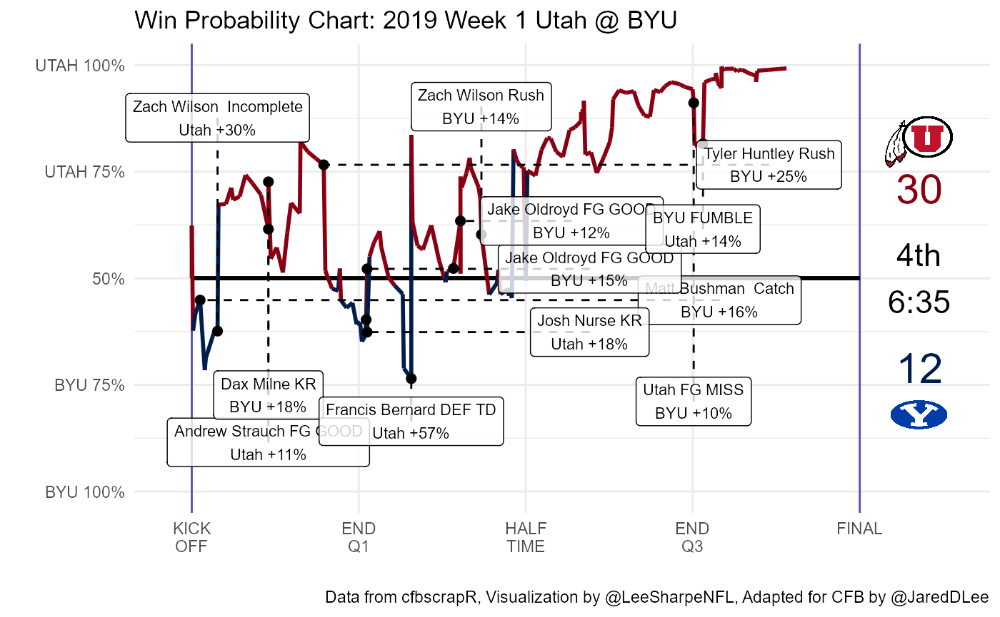

Making Animated Win Probability Charts with cfbscrapR
Jared Lee | @JaredDLee
2020-09-24
Animated_WP_Plotting.RmdHave you ever wanted to make an animated win probability chart for college football like Lee Sharpe makes for the NFL? This document will walk you step-by-step through the process of adapting Sharpe’s code to college football using data from CollegeFootballData.com collected using the cfbscrapR package for R.
Load Packages
We’re going to need several packages to generate the winning percentage plot: tidyverse for easy data wrangling, string manipulation, and plotting, glue to easily make the labels, ggimage to put the logos on the plot, and animation to actually build the GIF.
cfbscrapR
We’ll start by picking a team, a week, and a year and using cfbscrapR’s functions to pull the play-by-play and the game info. cfb_pbp_data() will grab the play-by-play info and make sure that epa_wpa is TRUE to get the win probabilities for the plot. cfb_game_info() will pull the game info such as the home and away team and the result.
team <- "Utah" week <- 1 year <- 2019 game_pbp <- cfbscrapR::cfb_pbp_data(year, team = team, week = week, epa_wpa = TRUE) game <- cfbscrapR::cfb_game_info(year, team = team, week = week)
We’ll also use the cfb_team_info() function to pull the color and logo information and add it to the game info. We’ll also add in a result column that is the score difference between the home and the away teams that we’ll use later.
team_info <- cfbscrapR::cfb_team_info() team_logos <- team_info %>% select(school, color, alt_color, logos, alt_name2) %>% mutate(logo = map(logos, magrittr::extract2, 1), logo = as.character(logo)) %>% select(-logos) game <- game %>% inner_join(team_logos, by = c("away_team" = "school")) %>% rename(away_logo = logo, away_color = color, away_alt_color = alt_color, away_abr = alt_name2) %>% inner_join(team_logos, by = c("home_team" = "school")) %>% rename(home_logo = logo, home_color = color, home_alt_color = alt_color, home_abr = alt_name2) %>% mutate(result = home_points - away_points) %>% rename(home_score = home_points, away_score = away_points)
To build the labels, we’re going to use a custom function to pull the player names out of the play text. Saiem Gilani wrote the bulk of the regular expressions here to get the names. They may not catch all player names, especially for sacks, kick returns, and punt returns.
add_player_cols <- function(pbp) { ## Extract player names # RB names pbp <- pbp %>% mutate( rush_player = ifelse(rush == 1, str_extract(play_text, "(.{0,25} )run |(.{0,25} )\\d{0,2} Yd Run"), NA), rush_player = str_remove(rush_player, " run | \\d+ Yd Run")) # QB names pbp <- pbp %>% mutate( pass_player = ifelse(pass == 1 & play_type != "Passing Touchdown", str_extract(play_text, "pass from (.*?) \\(|(.{0,30} )pass |(.+) sacked by|(.+) sacked for|(.{0,30} )incomplete "), NA), pass_player = str_remove(pass_player, "pass | sacked by| sacked for| incomplete"), pass_player = if_else(play_type == "Passing Touchdown", str_extract(play_text, "pass from(.+)"), pass_player), pass_player = str_remove(pass_player, "pass from "), pass_player = str_remove(pass_player, "\\(.+\\)"), pass_player = str_remove(pass_player, " \\,"), pass_player = ifelse(play_type == "Passing Touchdown" & is.na(pass_player), str_extract(play_text, "(.+)pass complete to"), pass_player), pass_player = str_remove(pass_player, " pass complete to(.+)"), pass_player = str_remove(pass_player, " pass complete to"), pass_player = ifelse(play_type == "Passing Touchdown" & is.na(pass_player), str_extract(play_text, "(.+)pass,to"), pass_player), pass_player = str_remove(pass_player, " pass,to(.+)"), pass_player = str_remove(pass_player, " pass,to")) ## Receiver names pbp <- pbp %>% mutate( receiver_player = ifelse(pass == 1, str_extract(play_text, "to (.+)"), NA), receiver_player = if_else(str_detect(play_text, regex("Yd pass", ignore_case = TRUE)), str_extract(play_text, "(.{0,25} )\\d{0,2} Yd pass"), receiver_player), receiver_player = if_else(str_detect(play_text, regex("Yd TD pass", ignore_case = TRUE)), str_extract(play_text, "(.{0,25} )\\d{0,2} Yd TD pass"), receiver_player), receiver_player = ifelse(play_type == "Sack" | play_type == "Interception Return" | play_type == "Interception Return Touchdown" | (play_type %in% c("Fumble Recovery (Opponent)", "Fumble Recovery (Opponent) Touchdown") & str_detect(play_text, "sacked")), NA, receiver_player), receiver_player = str_remove(receiver_player, "to "), receiver_player = str_remove(receiver_player, "\\,.+"), receiver_player = str_remove(receiver_player, "for (.+)"), receiver_player = str_remove(receiver_player, " (\\d{1,2})"), receiver_player = str_remove(receiver_player, " Yd pass"), receiver_player = str_remove(receiver_player, " Yd TD pass"), receiver_player = str_remove(receiver_player, "pass complete to"), receiver_player = str_remove(receiver_player, regex("penalty", ignore_case = TRUE)), receiver_player = ifelse(!str_detect(receiver_player, "III"), str_remove(receiver_player, "[A-Z]{3,}+"), receiver_player), receiver_player = ifelse(!str_detect(receiver_player, "III"), str_remove(receiver_player, "[A-Z]{3,}+"), receiver_player), receiver_player = ifelse(!str_detect(receiver_player, "III"), str_remove(receiver_player, "[A-Z]{3,}+"), receiver_player), receiver_player = str_remove(receiver_player, " &"), receiver_player = str_remove(receiver_player, "A&M"), receiver_player = str_remove(receiver_player, " ST"), receiver_player = str_remove(receiver_player, " GA"), receiver_player = str_remove(receiver_player, " UL"), receiver_player = str_remove(receiver_player, " FL"), receiver_player = str_remove(receiver_player, " OH"), receiver_player = str_remove(receiver_player, " NC"), receiver_player = str_remove(receiver_player, " É"), receiver_player = str_remove(receiver_player, " fumbled,"), receiver_player = str_remove(receiver_player, "the (.+)"), receiver_player = str_remove(receiver_player, "pass incomplete to"), receiver_player = str_remove(receiver_player, "(.+)pass incomplete to"), receiver_player = str_remove(receiver_player, "(.+)pass incomplete"), receiver_player = str_remove(receiver_player, "pass incomplete")) ## Extract player names ## Sack player names pbp <- pbp %>% mutate( sack_players = ifelse(pass == 1 & play_type == "Sack", str_extract(play_text, "sacked by(.+)"), NA), sack_players = str_remove(sack_players, "for (.+)"), sack_players = str_remove(sack_players, "(.+)by"), sack_player1 = str_remove(sack_players, "and (.+)"), sack_player2 = if_else(str_detect(sack_players, "and (.+)"), str_remove(sack_players, " (.+) and"), NULL)) ## Interception player names pbp <- pbp %>% mutate( interception_player = ifelse(pass == 1 & (play_type == "Interception Return"| play_type == "Interception Return Touchdown"), str_extract(play_text, "intercepted (.+)"), NA), interception_player = if_else(str_detect(play_text, regex("Yd pass", ignore_case = TRUE)), str_extract(play_text, "(.{0,25} )\\d{0,2} Yd pass"), interception_player), interception_player = if_else(str_detect(play_text, regex("Yd Interception Return", ignore_case = TRUE)), str_extract(play_text, "(.{0,25} )\\d{0,2} Yd Interception Return"), interception_player), interception_player = str_remove(interception_player, "return (.+)"), interception_player = str_remove(interception_player, "(.+) intercepted "), interception_player = str_remove(interception_player, "intercepted"), interception_player = str_remove(interception_player, " Yd Interception Return"), interception_player = str_remove(interception_player, " (\\d{1,2})")) ## Punter Name pbp <- pbp %>% mutate( punter_player = ifelse(str_detect(play_type, "Punt"), str_extract(play_text, ".{0,25} punt"), NA), punter_player = str_remove(punter_player," punt")) ## Punt Returner pbp <- pbp %>% mutate( punt_returner_player = ifelse(str_detect(play_type, "Punt"), str_extract(play_text, ", .{0,25} returns"), NA), punt_returner_player = str_remove(punt_returner_player, ", "), punt_returner_player = str_remove(punt_returner_player, " returns")) ## Kickoff Specialist Name pbp <- pbp %>% mutate( kickoff_player = ifelse(str_detect(play_type, "Kickoff"), str_extract(play_text, ".{0,25} kickoff"), NA), kickoff_player = str_remove(kickoff_player," kickoff")) ## Kickoff Returner pbp <- pbp %>% mutate( kickoff_returner_player = ifelse(str_detect(play_type,"ickoff"), str_extract(play_text,", .{0,25} return"), NA), kickoff_returner_player = str_remove(kickoff_returner_player,", "), kickoff_returner_player = str_remove(kickoff_returner_player," return")) ## Field Goal Kicker pbp <- pbp %>% mutate( fg_kicker_player = ifelse(str_detect(play_type, "Field Goal"), str_extract(play_text, regex("(.{0,25} )\\d{0,2} yd field goal| | (.{0,25} )\\d{0,2} yd fg", ignore_case = TRUE)), NA), fg_kicker_player = str_remove(fg_kicker_player, regex(" Yd Field Goal|Yd FG", ignore_case = TRUE)), fg_kicker_player = str_remove(fg_kicker_player," (\\d{1,2})") ) pbp <- pbp %>% rename( rusher_player_name = rush_player, receiver_player_name = receiver_player, passer_player_name = pass_player, sack_player_name = sack_player1, sack_player_name2 = sack_player2, interception_player_name = interception_player, punter_player_name = punter_player, fg_kicker_player_name = fg_kicker_player, kickoff_player_name = kickoff_player, kickoff_returner_player_name = kickoff_returner_player, punt_returner_player_name = punt_returner_player) return(pbp) }
Now we are ready to transform our play-by-play data frame to match what we need to work with Lee Sharpe’s animation code. First, we will rename several columns that are similar between cfbscrapR and nflfastR to match nflfastR’s column names. Then we need to create a few new columns that cfbscrapR doesn’t have. game_seconds_remaining is really just renaming TimeSecsRem but correcting for the half. result grabs from the game information and is the difference in the home and away score. We create the time column to use as the clock on the right side of the animation. Finally, we use our custom add_player_cols() function to add the player names to our data.
game_pbp <- game_pbp %>% rename(qtr = period, wp = wp_before, posteam = offense_play, defteam = defense_play, away_team = away, home_team = home, play_id = game_play_number, posteam_score = offense_score, defteam_score = defense_score) %>% mutate(game_seconds_remaining = ifelse(half == 1, TimeSecsRem + 1800, TimeSecsRem), result = game$result, minlabel = ifelse(clock.minutes >= 15, ifelse(clock.minutes == 15 & clock.seconds == 0, 15, clock.minutes - 15), clock.minutes), minlabel = ifelse(minlabel < 10, paste0("0", minlabel), minlabel), seclabel = ifelse(clock.seconds < 10, paste0("0", clock.seconds), clock.seconds), time = paste0(minlabel, ":", seclabel)) %>% add_player_cols()
Now that our data matches nflfastR, we can start to copy Lee Sharpe’s code and the bulk of the remaining code is his with a few minor adjustments to the plot, the overtime logic, and the labels. First we filter out plays that don’t have a win percentage and fix the win probability so that it is always the probability of the away team winning.
base_wp_data <- game_pbp %>% filter(!is.na(wp)) %>% mutate(s = game_seconds_remaining, wp = ifelse(posteam == away_team, wp, 1 - wp))
Then we fix the plays without a wpa.
# fix if play other than last is NA for (r in (nrow(base_wp_data)-1):1) { if (!is.na(base_wp_data$wp[r]) && is.na(base_wp_data$wpa[r])) { target_wp <- base_wp_data$wp[r+1] base_wp_data$wpa[r] <- target_wp - base_wp_data$wp[r] } } # fix if last play is NA if (is.na(base_wp_data$wpa[nrow(base_wp_data)])) { r <- nrow(base_wp_data) move_to <- ifelse(game$result < 0, 1, ifelse(game$result > 0, 0, 0.5)) delta <- move_to - base_wp_data$wp[r] base_wp_data$wpa[r] <- ifelse(base_wp_data$posteam[r] == game$away_team, delta, -delta) }
Now we create the labels. This generates labels for any play that had a change in the winning percentage of more than 10 percentage points. We’ll also simplify our data frame by only selecting the relevant columns for our plots.
wp_data <- base_wp_data %>% mutate( helped=ifelse(wpa > 0, posteam, defteam), text = case_when( abs(wpa) > 0.1 & play_type == "Kickoff" & !is.na(kickoff_returner_player_name) ~ glue("{kickoff_returner_player_name} KR"), abs(wpa) > 0.1 & play_type == "Rush" ~ glue("{rusher_player_name} Rush"), abs(wpa) > 0.1 & play_type == "Pass Reception" ~ glue("{receiver_player_name} Catch"), abs(wpa) > 0.1 & play_type == "Sack" ~ glue("{sack_player_name} SACK"), abs(wpa) > 0.1 & play_type == "Punt" ~ "",#glue("{punt_returner_player_name} PR"), abs(wpa) > 0.1 & play_type == "Pass Incompletion" ~ glue("{passer_player_name} Incomplete"), abs(wpa) > 0.1 & play_type == "Fumble Recovery (Opponent)" ~ glue("{posteam} FUMBLE"), abs(wpa) > 0.1 & play_type == "Penalty" ~ glue("PENALTY"), abs(wpa) > 0.1 & play_type == "Field Goal Missed" ~ glue("{posteam} FG MISS"), abs(wpa) > 0.1 & play_type == "Passing Touchdown" ~ glue("{receiver_player_name} TD"), abs(wpa) > 0.1 & play_type == "Rushing Touchdown" ~ glue("{rusher_player_name} TD"), abs(wpa) > 0.1 & play_type == "Field Goal Good" & !is.na(fg_kicker_player_name) ~ glue("{fg_kicker_player_name} FG GOOD"), abs(wpa) > 0.1 & play_type == "Field Goal Good" & is.na(fg_kicker_player_name) ~ glue("{posteam} FG GOOD"), abs(wpa) > 0.1 & play_type == "Timeout" ~ "", abs(wpa) > 0.1 & play_type == "Interception Return" ~ glue("{interception_player_name} INT"), abs(wpa) > 0.1 & play_type == "Fumble Recovery (Own)" ~ glue("{rusher_player_name} Rush"), abs(wpa) > 0.1 & play_type == "Blocked Field Goal" ~ glue("{posteam} FG BLK"), abs(wpa) > 0.1 & play_type == "Kickoff Return (Offense)" ~ glue("{kickoff_returner_player_name} KR"), abs(wpa) > 0.1 & play_type == "Blocked Punt" ~ glue("{defteam} PUNT BLK"), abs(wpa) > 0.1 & play_type == "Interception Return Touchdown" ~ glue("{interception_player_name} DEF TD"), abs(wpa) > 0.1 & play_type == "Kickoff Return Touchdown" & !is.na(kickoff_returner_player_name) ~ glue("{kickoff_returner_player_name} KR TD"), abs(wpa) > 0.1 & play_type == "Punt Touchdown" ~ glue("{punt_returner_player_name} PR TD"), abs(wpa) > 0.1 & play_type == "Fumble Recovery (Opponent) Touchdown" ~ glue("{defteam} FUMBLE TD"), abs(wpa) > 0.1 & play_type == "Fumble Return Touchdown" ~ glue("{defteam} FUMBLE TD"), abs(wpa) > 0.1 & play_type == "Safety" ~ glue("SAFETY"), abs(wpa) > 0.1 & play_type == "Punt Touchdown" ~ glue("{posteam} PR FUMBLE TD"), abs(wpa) > 0.1 & play_type == "Kickoff Touchdown" ~ glue("{posteam} KR FUMBLE TD"), abs(wpa) > 0.1 & play_type == "Punt Return Touchdown" ~ glue("{punt_returner_player_name} PR TD"), abs(wpa) > 0.1 & play_type == "Uncategorized" ~ "", abs(wpa) > 0.1 & play_type == "Blocked Punt Touchdown" ~ glue("{defteam} PUNT BLK TD"), abs(wpa) > 0.1 & play_type == "placeholder" ~ "", abs(wpa) > 0.1 & play_type == "Missed Field Goal Return" ~ glue("{posteam} FG MISS"), abs(wpa) > 0.1 & play_type == "Missed Field Goal Return Touchdown" ~ glue("{defteam} FGR TD"), abs(wpa) > 0.1 & play_type == "Defensive 2pt Conversion" ~ glue("{defteam} DEF 2PT"), TRUE ~ ""), text = ifelse(text == "","", glue("{text}\n{helped} +{abs(round(100*wpa))}%")), away_score = ifelse(posteam == away_team, posteam_score, defteam_score), home_score = ifelse(posteam == away_team, defteam_score, posteam_score)) %>% select(play_id, qtr, time, s, wp, wpa, posteam, away_score, home_score, text)
This is where the real magic happens. Sharpe’s code will iterate over the labels and try to determine valid locations for each one.
# points for plotting x_max <- 0 x_lab_min <- 3600 - 250 x_lab_max <- x_max + 250 x_score <- 320 - x_max # determine the location of the label wp_data$x_text <- NA wp_data$y_text <- NA wp_data <- wp_data %>% arrange(desc(abs(wpa))) seq_fix <- function(start, end, move) { if (move < 0 && start < end) return(end) if (move > 0 && start > end) return(end) return(seq(start, end, move)) } for (r in which(wp_data$text != "")) { # ordered list of spots this label could go y_side <- wp_data$wp[r] >= 0.5 if (y_side) { y_spots <- c(seq_fix(wp_data$wp[r] - 0.1, 0.05, -0.1), seq_fix(wp_data$wp[r] + 0.1, 0.95, 0.1)) } else { y_spots <- c(seq_fix(wp_data$wp[r] + 0.1, 0.95, 0.1), seq_fix(wp_data$wp[r] - 0.1, 0.05, -0.1)) } # iterate, see if this spot is valid for (i in 1:length(y_spots)) { valid <- TRUE if (nrow(wp_data %>% filter(y_spots[i] - 0.1 < wp & wp < y_spots[i] + 0.1 & wp_data$s[r] - 300 < s & s < wp_data$s[r] + 300)) > 0) { # too close to the WP line valid <- FALSE } if (nrow(wp_data %>% filter(y_spots[i] - 0.1 < y_text & y_text < y_spots[i] + 0.1 & wp_data$s[r] - 600 < x_text & x_text < wp_data$s[r] + 600)) > 0) { # too close to another label valid <- FALSE } if (valid) { # we found a spot for it, store and break loop wp_data$x_text[r] <- wp_data$s[r] wp_data$y_text[r] <- y_spots[i] break } } # try x_spots? if (!valid) { x_side <- wp_data$s[r] >= 1800 if (x_side) { x_spots <- c(seq_fix(wp_data$s[r] - 400, x_lab_max, -200), seq_fix(wp_data$s[r] + 400, x_lab_min, 200)) } else { x_spots <- c(seq_fix(wp_data$s[r] + 400, x_lab_min, 200), seq_fix(wp_data$s[r] - 400, x_lab_max, -200)) } for (i in 1:length(x_spots)) { valid <- TRUE if (nrow(wp_data %>% filter(wp_data$wp[r] - 0.1 < wp & wp < wp_data$wp[r] + 0.1 & x_spots[i] - 300 < s & s < x_spots[i] + 300)) > 0) { # too close to the WP line valid <- FALSE } if (nrow(wp_data %>% filter(wp_data$wp[r] - 0.1 < y_text & y_text < wp_data$wp[r] + 0.1 & x_spots[i] - 600 < x_text & x_text < x_spots[i] + 600)) > 0) { # too close to another label valid <- FALSE } if (valid) { # we found a spot for it, stop loop wp_data$x_text[r] <- x_spots[i] wp_data$y_text[r] <- wp_data$wp[r] break } } } # warn about the labels not placed if (!valid) { warning(glue(paste("No room for ({wp_data$s[r]},{round(wp_data$wp[r], 3)}):", "{gsub('\n',' ',wp_data$text[r])}"))) } }
Finally, we create two new rows to our data frame for the start and end of the game, filter out any other weirdness, and arrange our data frame by the order of the plays.
# add on WP boundaries first_row <- data.frame(play_id = 0, qtr = 1, time = "15:00", s = 3600, wp = 0.5, wpa = NA, text = as.character(""), x_text = 3600, y_text = 0.5, away_score = 0, home_score = 0, stringsAsFactors = FALSE) last_row <- data.frame(play_id = 999999, qtr = max(wp_data$qtr), s = x_max - 1, time = ifelse(max(wp_data$qtr) >= 5, "FINAL\nOT", "FINAL"), wp = ifelse(game$result < 0, 1, ifelse(game$result > 0, 0, 0.5)), wpa = NA, text = as.character(""), x_text = x_max, y_text = 0.5, away_score = game$away_score, home_score = game$home_score, stringsAsFactors = FALSE) wp_data <- wp_data %>% filter(posteam != "", wpa != 0) %>% bind_rows(first_row) %>% bind_rows(last_row) %>% arrange(play_id)
Plotting
Now we’re ready for plotting. The draw_frame() function will draw our win probability plot for any given number of seconds remaining in the game. This is where you can make any changes to the plot that you would like.
draw_frame <- function(n_sec) { # frame data frm_data <- wp_data %>% filter(s >= n_sec) # output quarter changes if (nrow(frm_data %>% filter(qtr == max(qtr))) == 1) { print(glue("Plotting pbp in quarter {max(frm_data$qtr)}")) } # plot frm_plot <- frm_data %>% ggplot(aes(x = s, y = wp)) + theme_minimal() + geom_vline(xintercept = c(3600, x_max), color = "#5555AA") + geom_segment(x = -3600, xend = -x_max, y = 0.5, yend = 0.5, size = 0.75) + geom_image(x = x_score, y = 0.82, image = game$away_logo, size = 0.08, asp = 1.5) + geom_image(x = x_score, y = 0.18, image = game$home_logo, size = 0.08, asp = 1.5) + geom_line(aes(color = ..y.. < .5), size = 1) + scale_color_manual(values = c(game$away_color, game$home_color)) + scale_x_continuous(trans = "reverse", minor_breaks = NULL, labels = c("KICK\nOFF", "END\nQ1", "HALF\nTIME", "END\nQ3", "FINAL"), breaks = seq(3600, 0, -900), limits = c(3700, x_max - 490)) + scale_y_continuous(labels = c(glue("{game$home_abr} 100%"), glue("{game$home_abr} 75%"), "50%", glue("{game$away_abr} 75%"), glue("{game$away_abr} 100%")), breaks = c(0, 0.25, 0.5, 0.75, 1), limits = c(0, 1)) + coord_cartesian(clip = "off") + xlab("") + ylab("") + labs(title = glue("Win Probability Chart: {game$season} Week {game$week} {game$away_team} @ {game$home_team}"), caption = "Data from cfbscrapR, Visualization by @LeeSharpeNFL, Adapted for CFB by @JaredDLee") + theme(legend.position = "none") # score display away_score <- max(frm_data$away_score) home_score <- max(frm_data$home_score) # clock display qtr <- case_when( max(frm_data$qtr) == 1 ~ "1st", max(frm_data$qtr) == 2 ~ "2nd", max(frm_data$qtr) == 3 ~ "3rd", max(frm_data$qtr) == 4 ~ "4th", max(frm_data$qtr) == 5 ~ "OT", TRUE ~ as.character(max(frm_data$qtr)) ) clock <- tail(frm_data$time, 1) clock <- ifelse(substr(clock, 1, 1) == "0", substr(clock, 2, 100), clock) clock <- paste0(qtr, "\n", clock) clock <- ifelse(grepl("FINAL", tail(frm_data$time, 1)), tail(frm_data$time, 1), clock) # add score and clock to plot frm_plot <- frm_plot + annotate("text", x = -1*x_score, y = 0.71, label = away_score, color = game$away_color, size = 8) + annotate("text", x = -1*x_score, y = 0.29, label = home_score, color = game$home_color, size = 8) + annotate("text", x = -1*x_score, y = 0.50, label = clock, color = "#000000", size = 6) # label key moments frm_labels <- frm_data %>% filter(text != "") frm_plot <- frm_plot + geom_point(frm_labels, mapping = aes(x = s, y = wp), color = "#000000", size = 2, show.legend = FALSE) + geom_segment(frm_labels, mapping = aes(x = x_text, xend = s, y = y_text, yend = wp), linetype = "dashed", color = "#000000", na.rm=TRUE) + geom_label(frm_labels, mapping = aes(x = x_text, y = y_text, label = text), size = 3, color = "#000000", na.rm = TRUE, alpha = 0.8) # plot the frame plot(frm_plot, width = 12.5, height = 6.47, dpi = 500) }
Let’s test our function to make sure the plot looks like how we want it by running our function with 6 minutes left in the game.
draw_frame(360)

Looks great, so next we create the draw_game() function which will draw every frame for our GIF.
Animating
Finally, we run our draw_game() function inside of saveGIF().
# saveGIF(draw_game(), interval = 0.1, movie.name = "animated_wp.gif")
 This process takes awhile, about 3 minutes on my computer. We can also re-size our GIF using the
This process takes awhile, about 3 minutes on my computer. We can also re-size our GIF using the ani.width, ani.height and ani.res parameters. I like to make my plots wider and at higher resolution, but be careful, this will drastically increase the rendering time and the file size.
# saveGIF(draw_game(), interval = 0.1, movie.name = "animated_wp_wide.gif", # ani.width = 1000, ani.height = 650, ani.res = 110)

Result